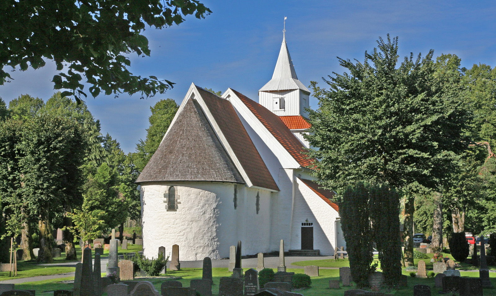
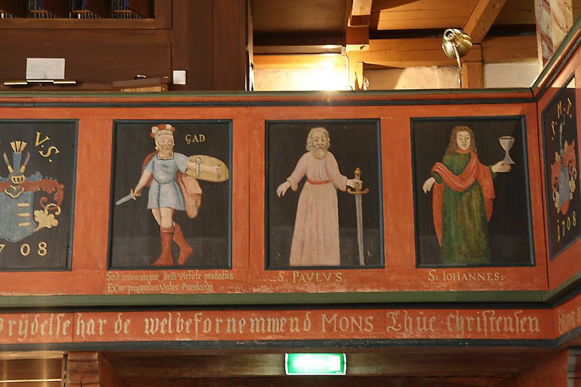
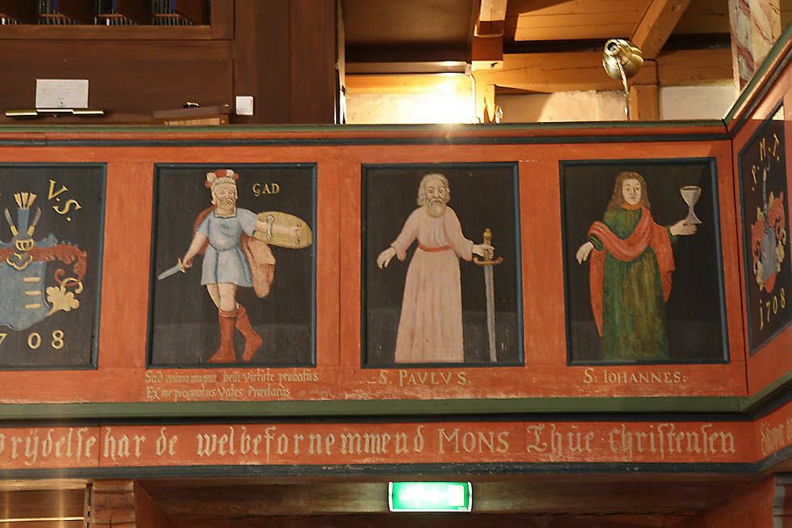
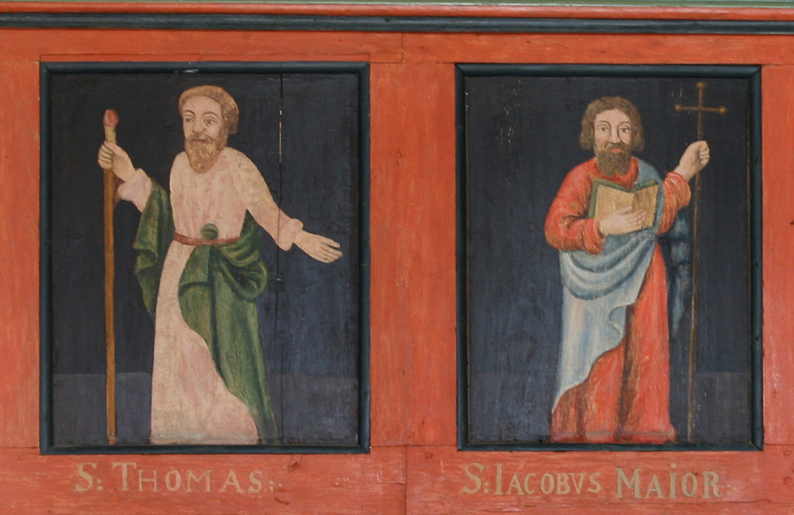
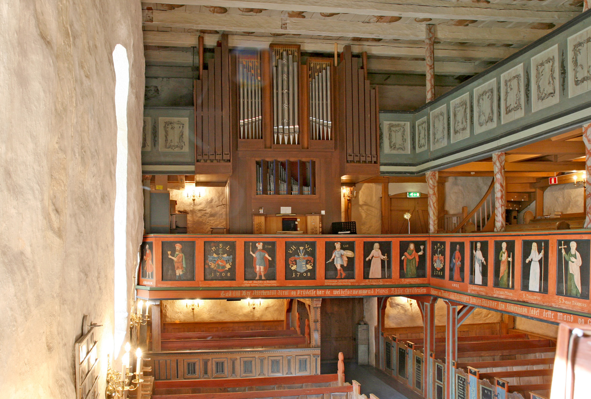
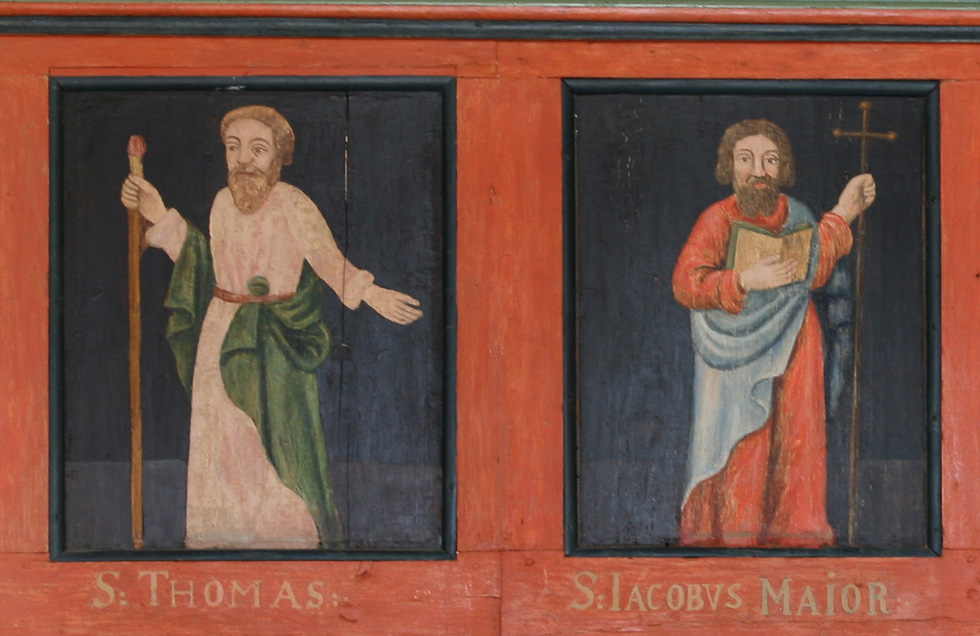
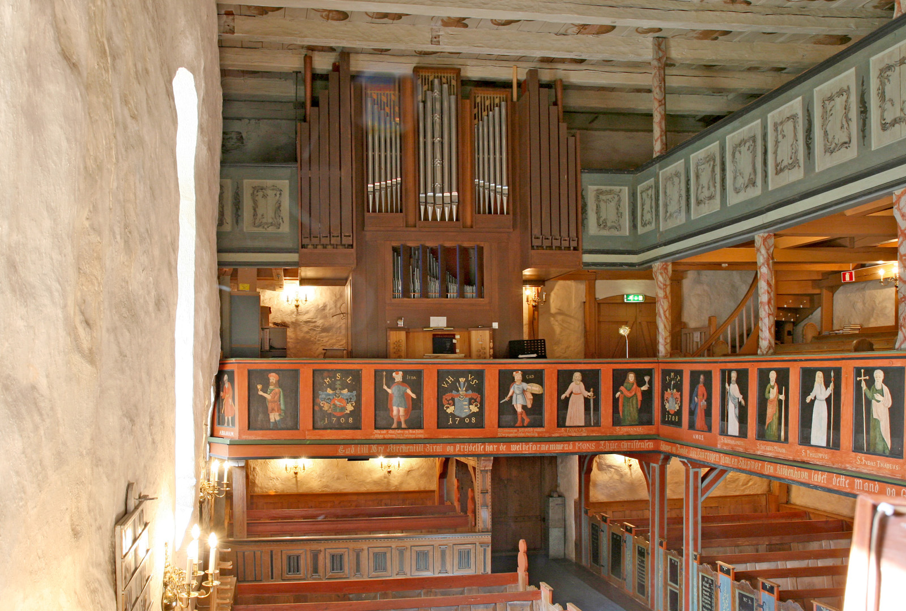
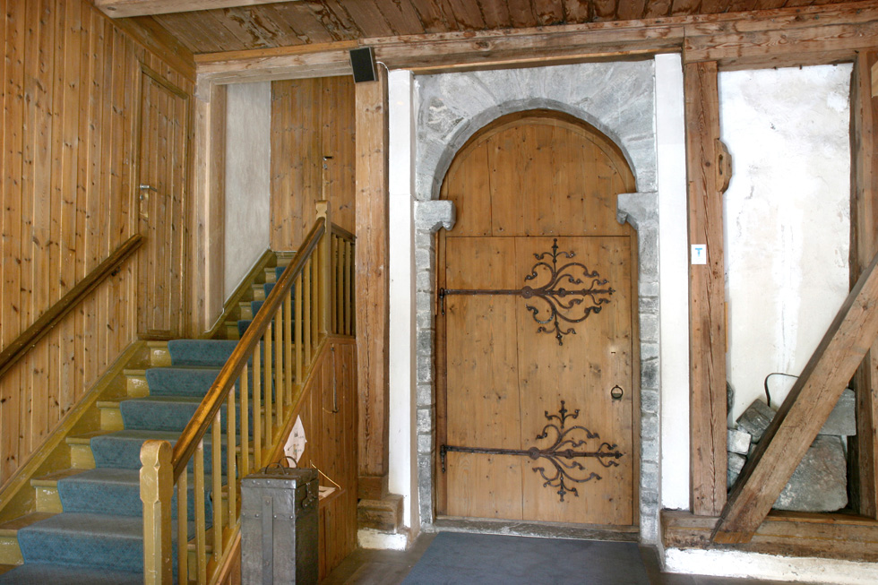
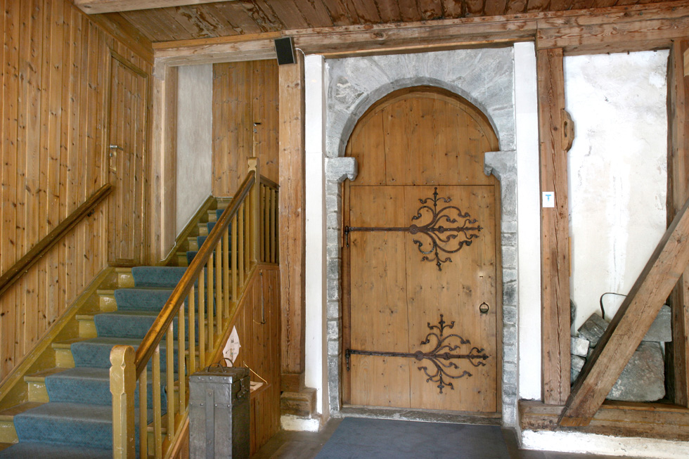

Fjære kirke
Foto: Torvald Slettebø, Universitetet i Agder, Seniorsenteret
Tekst: Bjarne Karsten Nenseter
Prestegjeld: Fjære
Prosti: Vest-Nedenes
Kommune: Grimstad
Fjære og Hommedal (Landvik) prestegjeld i Grimstad kommune hører til de vakreste bygder i Aust-Agder med en rik og avvekslende natur: Skogkledte åser, smilende landskap og en kyststrekning med værbitte knauser og lune viker og sandstrender. En rekke oldfunn viser at disse bygdene ble tidlig befolket.
Midt i Fjære sogn ligger Fjære kirke på en åpen slette. Her liggerdet hvitkalkede gudshus som bygdens ærverdigste minnesmerke, omgitt av en mektig kirkegårdsmur og gamle furuer og løvtrær. Gjennom Henrik Ibsens berømte dikt «Terje Viken» er kirken blitt viden kjent og hører til en av de store turistattraksjoner. Men valfarten til denne kirken kan føres lengre tilbake. Det viser en post i Kirketilsynets protokoll, den såkalte Kirkestol, for 1696-97: «kierchen at maye og ornamentene at holde rene. Saasom denne Kircke altid besøges af fremmede folk og nyder derfor ofte tvettelse og pyntning. 3 rdl.». Den opprinnelige kirke har bestått av det nåværende kirkeskip antagelig med et lite våpenhus i tre foran sydportalen.Det eldste kirkehus ble antagelig bygd i tre. Stenkirken kan så være bygd omkring trekirken som avløsning og utvidelse av den. Den eldste del av kirken går tilbake til tidlig middelalder, kanskje før 1100. Den vakre sydportal har deler som en mener har hatt en annen anvendelse tidligere. Portalen avsluttes med et mannshode som også kan være eldre enn 1100. Presteinngangen i koret har en vakker senromansk portal med løvehoder. Alt tyder på at koret er bygget til senere. Det ble avsluttet med en halvrund abside mot øst. Også vestportalen er fra middelalderen. Den var i mange år stengt, men ble åpnet igjen med tårnet som var ferdig i 1844. De gamle gotiske hengslejern kom på plass igjen da vestportalen ble restaurert i 1951.
Tilbygget av kor og apsis gjorde det nødvendig med åpning i østgavlen. Kirken fikk da en smal koråpning som var vanlig på denne tiden og ennå finnes i noen kirker som f.eks. Nes kirke i Telemark. Det eksteriør som kirken fikk etter tilbygging av kor og apsis, beholdt den stort sett til den fikk sakristi i 1780-årene og tårn som ble påbegynt i 1820-årene, men først ferdig i 1844.
I «Kirkestolen» nevnes i 1663 at østveggen bør rives: «desforuden gjøres høilig fornøden muren indeni kirken, saaledes at utbrydes at almuen over alt kan bese og ret høre præsten foran alteret». Det skjedde først i 1744-46 og koråpningen fikk da spissbueform.
Interiøret i Fjære kirke preges av galleriene på vest- og nordveggen, to over hverandre. Galleribrystningene er vakkert dekorert med billedrekker av apostler og profeter og våpenskjold i noen felter. De nedre felter er malt av Samuel Dorn som også har stått for skymalingen i taket og maling av benkedørene.
Alterbordet fra middelalderen er i stein. Altertavlen i renessanse er tredelt med nattverden i midten og korsfestelsen og oppstandelsen på sidene. Prekestolen - også i renessanse - har doble hjørnestolper, utskårne evangelister og baldakin. Døpefonten er et klenodium, hugget i klebersten i gotisk stil, antagelig kommet fra domkirkeverkstedet i Stavanger da absiden ble bygget på 1200-tallet. Det gamle kirkeskip er blitt borte. Det nåværende er en kopi av Tordenskiolds Løvendals galei. Kirken har to klokker, en fra 1660 og en fra 1855.
I 1930-årene begynte restaurering av kirken. Sakristiet av tre ble da revet, absiden gjenoppført. Nytt sakristi ble oppført på nordsiden i 1939. Det tjener også som forstøtning for muren som heller utover. Etter krigen ble arbeidet tatt opp igjen under ledelse av domkirkearkitekt W. Swendsen og senere arkitekt Thorne. Det byggetekniske ble utført av byggmester Matiassen, Fjære. Restaureringskonsulent Finn Krafft ledet fargerestaureringen. Malerarbeidet ble utført av malermester Michelsen, Arendal. Kirken har gammelt verdifullt kirkesølv. På nordsiden av kirken står bautaen over Terje Viken.
Egen prest i Fjære nevnes i 1320-årene. Senere ble Fjære med Grimstad og Froland slått sammen med Øyestad. 11845 ble det eget prestegjeld sammen med Grimstad, og i 1885 ble Grimstad skilt ut. Fra 1969 utgjør Fjære og Grimstad igjen ett prestegjeld. Det hører til Grimstad kommune.
Fremdeles valfarter folk til den gamle ærverdige kirke som nå har fått tilbake sitt fargerike interiør. Men først og fremst er den menighetens samlingssted om ord og sakrament slik den har vært det like fra de eldste kirketider i vårt land.
Teksten er hentet fra Bjarne Karsten Nenseters bok ”PÅ KIRKEVANDRING I AUST-AGDER”, som han utga i 1993, på grunnlag av sine artikler i Agderposten i 1950-årene, da han var prest i Aust-Agder. Vi gjengir her teksten med tillatelse fra Nenseters arvinger



 

 





 
